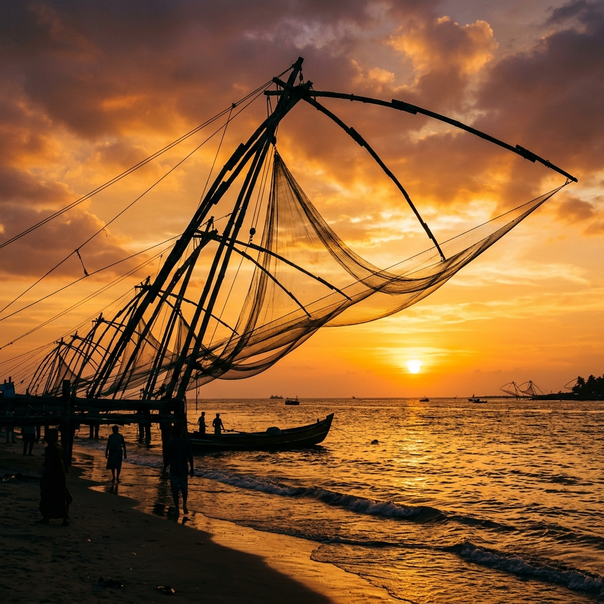

If you ask a tourist guide where to eat in Alleppey, they will send you to a lakeside hotel with air conditioning, glass tables, and cutlery. But if you ask a local canoe pilot, they will point to a windowless thatched shack on a narrow mud bank, smelling of woodsmoke and hot coconut oil.
This is a toddy shop (shaap). There are no chairs here, just wooden counters worn smooth by elbows and damp glasses. You stand shoulder-to-shoulder with planters, boatmen, and merchants.
"In a toddy shop, all barriers disappear. You are there for the heat of the pepper, the sourness of the toddy, and the shared space of the river."
The menu is simple: freshwater pearl spot (karimeen) fried with red chili paste, spicy duck curry, and steamed tapioca. Everything is served on banana leaves. You eat with your hands, standing up, cooling your palate with sips of sweet, fermenting coconut toddy.
Eating standing up changes your relation to the meal. It is active, communal, and focused. You don't linger over coffee; you consume the spices, talk with your neighbor about the river currents, and make way for the next guest. It is the most honest meal you can find on the coast.

Anjali R.
Culinary Curator
Anjali coordinates food research at Keralaway. She has documented over forty heritage family recipes across the Malabar and Travancore coasts.